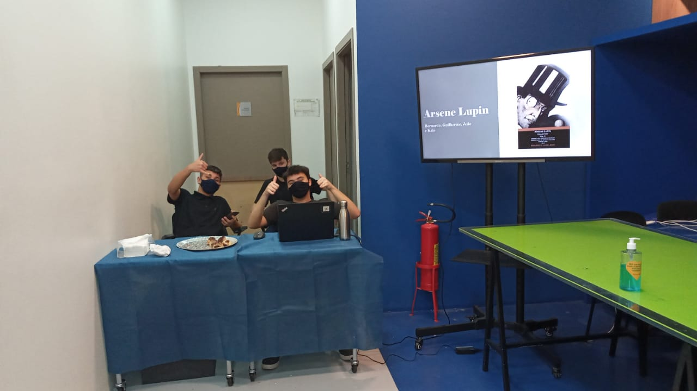
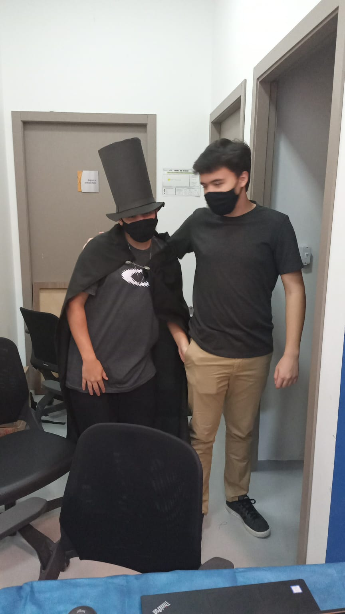

Feira Cultural Senac
Leitura de livros e apresentações de grupos com várias atividades
No dia seis de novembro (sábado) ocorreu a feira cultural, um projeto que foi feito em parceria com os professores de Ciências humanas, professor Bruno e a professora Barbara, para mostrar as culturas de diferentes lugares a partir da leitura feita pelos alunos referente a livros, como Frankenstein, de X, A fantástica fábrica de chocolate, de X, O diário de Anne Frank, de X, O homem duplicado, Ladrão de casaca, Dom Quixote, Celular e contos de Edgar Allan Poe. Os alunos e alunas organizaram bancas para apresentar os livros e algumas curiosidades sobre eles.
Uma das obras abordadas na feira, O homem duplicado, conta a história de um professor que gosta de alugar filmes e ele acaba alugando alguns filmes que apresentam um ator parecido fisicamente com ele. O grupo responsável por essa obra fez uma atividade que era fazer um checklist em que o participante tinha que marcar algumas de suas características pessoais no formulário para identificar pessoas parecidas consigo.

Checklist referente à obra homem duplicado.
Outro livro que foi visto na feira foi o Frankenstein. O livro fala sobre um cientista, chamado Victor Frankenstein, que deu vida a uma criatura feita com pedaços de diferentes cadáveres. A história vai se desenvolver a partir do momento em que ele percebe a aberração que criou e decide fugir, abandonando seu "projeto" por medo e remorso, mas quando ele retorna, a criatura não está mais lá. O grupo responsável pela obra apresentou o enredo e também a origem de como a história havia sido pensada pela autora e as semelhanças da autora com o monstro, como os dois terem sido abandonados pelo pai e não terem conhecido a mãe. Além disso, o grupo comentou sobre a moda do “steampunk”(moda voltada ao futuro da tecnologia e a energia elétrica que estava no imaginário das pessoas do século XIX).

Foto do grupo do livro Frankenstein.
Outro grupo falou sobre o livro Ladrão de casaca, em que um dos integrantes estava vestido como o personagem Lupin, o próprio ladrão de casaca, e explicando para o pessoal esse tão amada conhecida figura, que por muito tempo foi motivo de novelas, peças de teatro, e até mesmo romances e desenhos animados. A história desse livro conta a vida de um ladrão que adorava se disfarçar para enganar aqueles que o queriam pegá-lo; ele era charmoso, estiloso e certamente era muito esperto e com todos esses requisitos acaba atraindo o público para conhecê-lo melhor.
Foto do grupo do livro Ladrão de Casaca.
Foto do grupo do livro Ladrão de Casaca.
Amigos e familiares dos participantes foram ver a apresentação das obras na feira para ver o que foi apresentado e saber mais sobre esses livros que para alguns, não sabiam que existiram e outros saberem mais sobre elas.